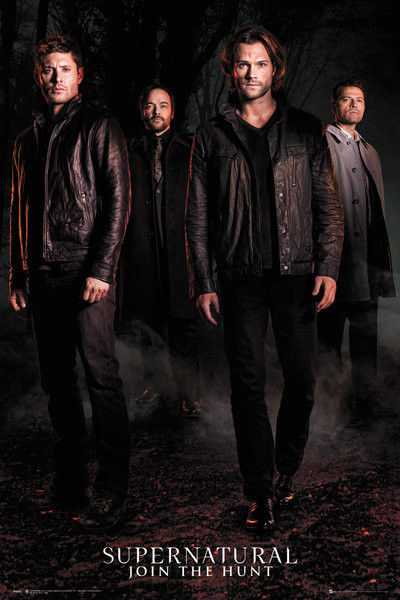
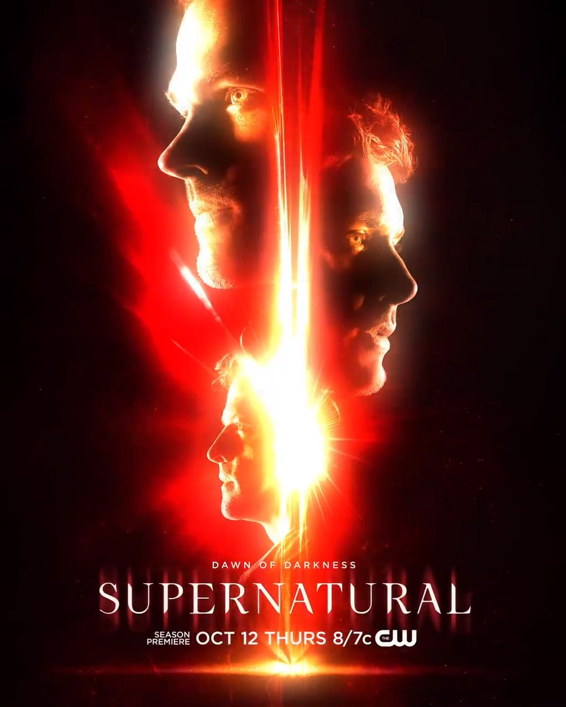
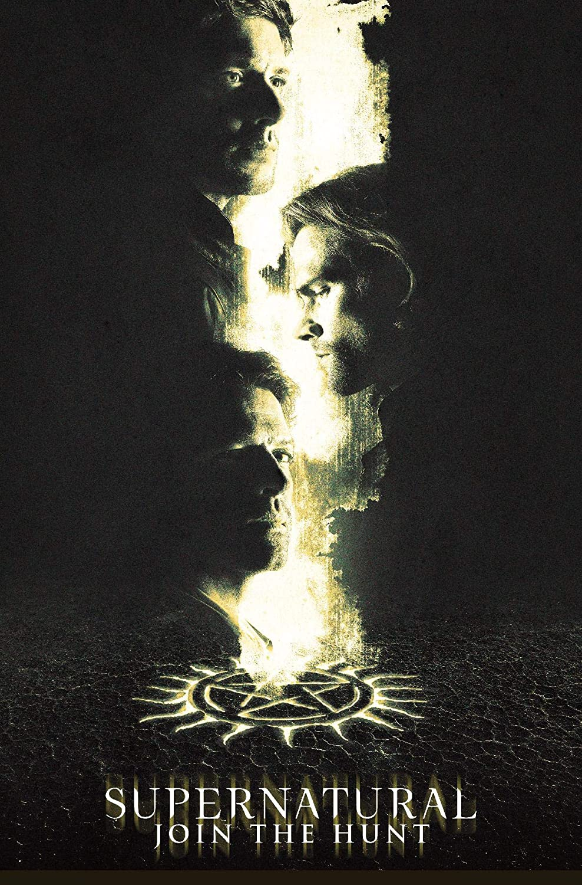
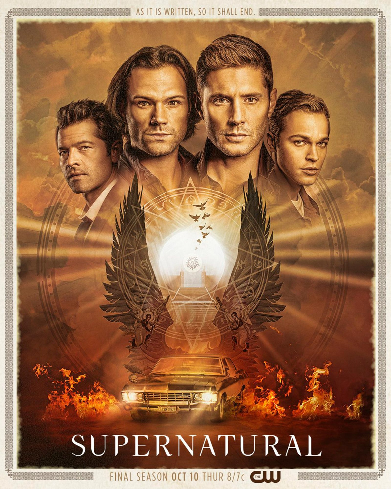

The Singer & Dabb Era
The Singer & Dabb Era covers the 12th season to the 15th, when Andrew Dabb became showrunner with Robert Singer after Jeremy Carver left.
Season 12
The twelfth season of Supernatural has 23 episodes. It premiered October 13 2016 with Keep Calm and Carry On and ended on May 18 2017 with All Along the Watchtower.
Summary
"Dear old dad, he finally apologized for abandoning me, and what's the very next thing he does? He ditches me. (...) You
know what my plan is? I don't have one! I'm just gonna keep on smashing daddy's already-broken toys and making you watch. "
- Lucifer
Dean meets his mother, Mary Winchester, for the first time in 30 years after Amara sends him the gift which
he wanted most. Sam has been captured by Lady Toni Bevell and is being tortured as punishment for his past sins.
Dean convinces Mary that he is her son and thereafter discovers that Sam has been captured. Dean, Mary and Castiel devise a
plan to rescue Sam. Lucifer has been possessing numerous vessels in his quest to find one that is suitable for him. He
finally possesses Vince Vincete, a veteran rock star, and kills Rowena in the process. After a concert where Lucifer plans
to destroy all those who attend, his vessel disintegrates before he is able to make the President of the United States his
vessel. Sam and Dean try to warn the president, but are
presumed to be assassins who are trying to kill the president and are thereby detained at an unknown center. They both
fake being dead in order to escape and are reunited with Castiel and Mary. Mary begins to work with Arthur Ketch of the
Men of Letters in order to get back into hunting. Mary tricks the brothers into stealing the Colt from one of the four princes
of hell Ramiel.
After Mick Davies is killed the brothers acknowledge that the Men of Letters have gone rogue. Meanwhile, the president has made
his assistant Kelly Kline pregnant and Castiel realizes that a Nephilim is to be born. Sam, Dean and Castiel try convince Kelly
about the impending danger. While Lucifer has been captured and being tortured by Crowley. Sam and a few hunters gather to defeat
the Men of Letters while Castiel retrieves Kelly after killing Dagon. Lucifer is released by Crowley's minion demon and heads on
to find his son. In the finale Kelly gives birth to the Nephilim, while Crowley sacrifices himself to kill Lucifer. Crowley and
Castiel die trying to kill Lucifer while Mary and Lucifer are pulled into the rift created by the Nephilim's birth. Dean kneels
down in despair after witnessing Castiel being killed while Sam is shocked when he arrives to see Jack the Nephilim grown into
a teenager.
Season 13
"Let me get this right. The ice caps are melting, a movie where a girl goes all the way with a fish wins best picture, and that damn food idjit from The Apprentice is the President.
(...)
And you call where we come from the apocalypse world?"
- Other Bobby
The thirteenth season of Supernatural has 23 episodes. It premiered October 12 2017 with Lost & Found and ended on May 17 2018 with Let the Good Times Roll.
Summary
Dean and Sam are left reeling from the loss of so many allies and family members and their new responsibility to 'raise' Jack, with
Sam willing to give the boy a chance while Dean is immediately concerned due to his heritage. In the other world,
Lucifer keeps Mary alive as a hostage to trade for his son when he returns home, but finds himself confronted by the
alternate Michael, who has killed his Lucifer and won the war. Although Dean becomes increasingly bitter at their recent
losses, he gains a new sense of hope when Jack unintentionally brings Castiel back to life. Things become complicated when
Men of Letters Arthur Ketch is revealed to have escaped death through a spell he received from Rowena, Ketch taking
Castiel and a weakened Lucifer prisoner after Lucifer escapes back into this world when Michael tries to use his grace
to create a portal so that he can conquer the other reality.
While the Winchesters' efforts to return to the other world to rescue Mary fail, Ketch is revealed to be working with Asmodeus,
who reveals in turn that the source of his power is Gabriel, who actually faked his death during his confrontation with Lucifer
but was sold to Asmodeus by the children of the real Loki. After their first attempt to enter the other world traps Jack in that
reality, the Winchesters retrieve the demon tablet, a translation of it reveals the ingredients needed to open a portal to the
other world. As Jack sides with Mary and the humans against the angels, the Winchesters and Castiel gather the ingredients for
the spell to open the portal while Lucifer tries to re-establish himself as king of Heaven in the absence of God and other
archangels. After Ketch rescues Gabriel, allowing the Winchesters to use his grace as part of the spell, the initial raid on
the other world fails to achieve more than Dean rescuing the alternate version of his deceased friend Charlie Bradbury, but
Gabriel flees in fear after an attack on the bunker by Asmodeus. With Heaven in desperate straits after Lucifer fails to hold
the angels together, Castiel is charged with finding Gabriel while the last ten angels try to keep Heaven in order, leaving
the Winchesters to mount a new assault on the other world with Gabriel and Lucifer. They are able to rescue a range of human
survivors from the other world, including the alternate versions of Bobby and Charlie, but Gabriel is killed in the process
and Lucifer and the alternate Michael follow them through.
As Lucifer takes Jack's power for himself, Dean is forced to make a deal to act as the vessel for the alternate Michael to
stop him. Dean is able to stay in control long enough to kill Lucifer, but the season ends with Michael taking control of
Dean's body and departing.
Season 14
"I just want to burn every one of his little worlds until I catch up to the old man. (...) Even God can die. "
- Other Michael
The fourteenth season of Supernatural has 23 episodes. It premiered October 11 2017 with Stranger in a Strange Land and ended on April 25 2018 with Moriah.
Summary
Three weeks after Apocalypse World Michael possessed Dean, the archangel is confronting individuals of every different species, questioning
their wants and dismissing them as hopeless, until he encounters a vampire who expresses his desire to eat. Praising his
desire as pure, Michael decides to raise monsters above mankind and begins experimenting with archangel grace and monsters,
making them immune to their former weaknesses. Sam, Bobby from Apocalypse World and Mary track Michael down, and Michael
seemingly leaves Dean's body after becoming irritated with Dean's resistance. Meanwhile, Jack becomes sick due to the loss
of his powers, and dies later, his soul ascending to Heaven. But the Shadow being from the Empty, believing Jack's soul
belongs to it and irritated with Castiel for escaping it, attacks Heaven and makes a deal with Castiel to take the angel
in place of Jack, but only when Castiel lets himself be happy again.
Dean, Sam, Castiel and the newly resurrected Jack decide to take down Michael and his army of monsters once and for all,
but Michael retakes control of Dean and unleashes his monsters on the city. The group subdue Michael, and Dean takes back
control of his body and imprisons the archangel in his mind. Dean, with the help of Billie, builds the Ma’lak Box to imprison
himself in, in order to protect the world from Michael. But Sam convinces Dean that they'll find another solution, and Dean makes
a wish that brings John Winchester back from the past for a day. Dean is then injured on a hunt, and Michael is unleashed.
Michael possesses Rowena temporarily, and kills most of the Apocalypse World hunters, but Jack burns off his soul to murder
Michael and takes Michael's grace to restore his powers.
Nick, who survived Lucifer's death and suffers psychological damage from so many years of being Lucifer's vessel, sets about
getting justice for the deaths of his family. His killing spree leads him to the prophet Donatello Redfield, and Nick communicates
with the recently awakened Lucifer in the Empty. Nick tricks Jack into giving him Jack's blood, and tries to resurrect Lucifer
to be his vessel again. Jack confronts, and then kills Nick in front of Mary. After Mary berates Jack for viciously murdering
Nick, the now soulless Jack kills Mary by accident, leaving the boys without their mother for a second time. Castiel prays for
God to return and fix Jack, but the angels manipulate Jack into solidifying their power. Out of options, Sam and Dean imprison
Jack in the Mal’ak Box, but Jack escapes. God returns and tells the boys that they must use a gun that he built to kill Jack,
but Sam and Dean, frustrated with God's disappearances and inaction, refuse him.
Angered at their defiance, God smites Jack, who wakes up to see the Shadow and Billie waiting for him in the Empty.
God decides to end the world, and unleashes every vengeful spirit from Hell back on Earth and sets an army of corpses upon Sam,
Dean and Castiel.
Season 15
"God was supposed to be gone. (...) We were free. (...) How the hell are we supposed to fight God?"
- Dean
The fifthteenth season of Supernatural has 20 episodes. It premiered October 10 2019 with Back and to the Future and ended on November 19 2018 with Carry On.
Summary